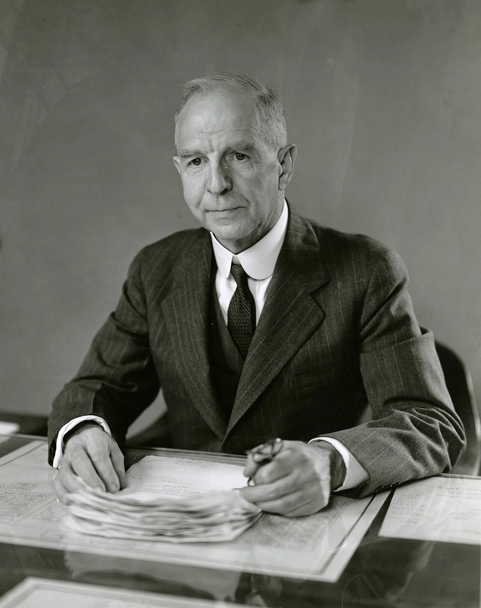
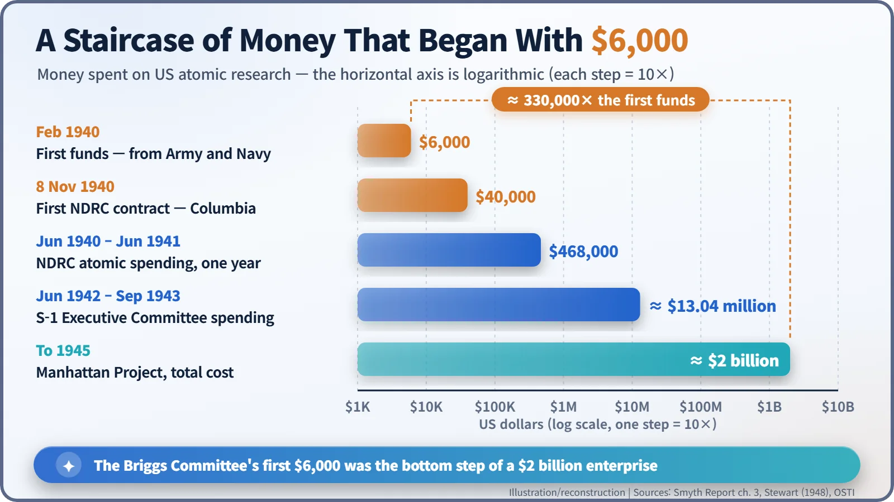
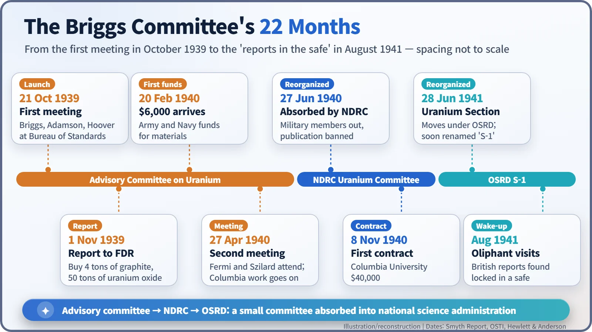
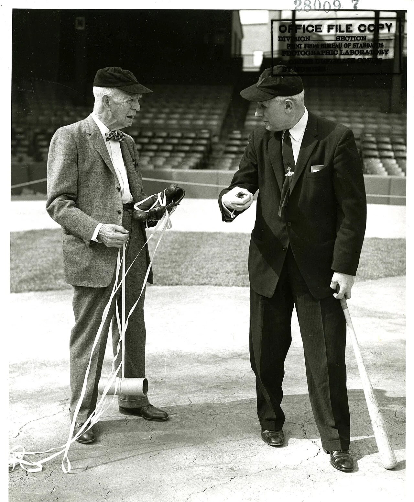

Nuclear History · 078
Four Tons of Graphite and $6,000 — The Briggs Uranium Committee Gets America Started (1939–1941)
America's atomic effort began not with a crash programme but with a small, cautious committee, a shopping list and $6,000.
After Einstein's letter reached him in October 1939, President Roosevelt did not launch a crash programme. He set up a three-man Advisory Committee on Uranium under Lyman J. Briggs, whose first report asked for 4 tons of graphite and 50 tons of uranium oxide, and whose first $6,000 arrived in February 1940. Its slowness drew sharp criticism, but its small purchases were the first step towards the Manhattan Project.
A shopping list for the President
Four tons of graphite. Fifty tons of uranium oxide.
That was the shopping list in a report sent to President Franklin D. Roosevelt on 1 November 1939. No weapon blueprints, no giant factories: just the stuff of pencil leads and a yellow mineral powder. The American atomic effort, which would end up costing about $2 billion, started with this modest list. Its authors were the Advisory Committee on Uranium, usually called the Briggs Committee after its chairman. [1]
A committee of three, born from a letter
In October 1939 Roosevelt finally heard the warning in the letter Albert Einstein had signed that summer. He responded, in the words of the US Department of Energy's official history, "quickly but cautiously". Instead of launching a big programme, he set up an advisory committee. [2] [3]
The chairman was Lyman J. Briggs (1874–1963), director of the National Bureau of Standards (today's NIST). He was 65, a physicist who had made his early name studying soil moisture at the Department of Agriculture. The other members were an Army ordnance officer, Lieutenant Colonel Keith F. Adamson, and a Navy officer, Commander Gilbert C. Hoover. That was the whole committee: three men. [1]

A Saturday meeting and a sceptical colonel
The first meeting took place on Saturday, 21 October 1939, at the Bureau of Standards in Washington. Alongside the three members sat Alexander Sachs, the economist who had carried the letter to the President, and the émigré physicists Leo Szilard, Eugene Wigner and Edward Teller. Einstein was invited but did not come. [1] [4]
Colonel Adamson was openly sceptical about an atomic bomb. According to a story told later by participants, he scoffed that morale, not new weapons, wins wars, and only after hearing more did he declare, "You'll get your money!" That exchange rests on recollections. What is documented is that he approved $6,000 for uranium and graphite for experiments at Columbia University. [5] [6]
The 1 November report: "a theoretical possibility"
Eleven days later the three members signed a report to the President. It made eight recommendations, the most concrete being to buy 4 tons of graphite and 50 tons of uranium oxide (short tons, so roughly 3.6 and 45 metric tonnes). [1]
Why graphite? The neutrons released when uranium splits are too fast to split the uranium-235 that makes up only about 0.7% of natural uranium. They need to be slowed down by a moderator, and graphite, being almost pure carbon, swallows very few neutrons. The question was exactly how few, and answering it took material by the ton.
The report called a chain reaction still only a theoretical possibility, but noted that, if it worked, it could power submarines and become a source of bombs far more destructive than anything then known. According to Roosevelt's aide Edwin "Pa" Watson, the President read it and "wished to keep it on file". There it stayed well into 1940. [4] [6]
Promised in October, paid in February
The money itself moved only after New Year. According to the Smyth Report, the US government's official account published in 1945, the first $6,000 came out of Army and Navy funds and was reported in a memorandum from Briggs to Watson dated 20 February 1940. About $3,200 of it went on graphite and cadmium. In today's money that $6,000 is worth roughly $130,000–140,000. [1]

In spring 1940, experiments confirmed that slow-neutron fission came mainly from uranium-235, and Briggs reported that a chain reaction looked doubtful without enrichment. But uranium-235 and uranium-238 are chemical twins, and their masses differ by only about 1%, which makes them very hard to separate. The committee handed out small grants for centrifuges, gaseous diffusion and thermal diffusion. Wigner later recalled the period this way: "We often felt as though we were swimming in syrup." [2] [7]
Swallowed by the NDRC
On 27 June 1940, as France was falling, the new National Defense Research Committee (NDRC) under Vannevar Bush absorbed the committee. Briggs stayed on as chairman, but the military members left, foreign-born scientists were kept off the committee, and publication of uranium research was banned. On 8 November 1940 the first formal contract, worth $40,000, was signed with Columbia University. When the Office of Scientific Research and Development (OSRD) was created on 28 June 1941, the committee became its Uranium Section and soon took the code name "S-1". [1] [2]

Reports in a safe, and "peace-time tempo"
The criticism was sharp. In early 1941 Karl T. Compton wrote that Briggs was "by nature slow, conservative, methodical and accustomed to operate at peace-time government bureau tempo." In August 1941 the British physicist Mark Oliphant flew over because the British conclusion that a bomb was feasible seemed to be going nowhere in America. He discovered that British reports sent to Briggs had not been shared with the committee members. Briggs, the story goes, had locked them in a safe. [6]
Fairness requires the other side of the ledger, too. The United States was still neutral. Nobody had ever demonstrated a chain reaction, and nobody knew how much uranium-235 a bomb would need. A peacetime government could hardly bet heavily on what its own advisers called a theoretical possibility. It is also worth remembering that the loudest complaints came from the people most anxious to move faster.
Even so, the graphite this little committee paid for fed into the measurements at Columbia and, in December 1942, into the first nuclear reactor in Chicago. The story of the moderator, in a sense, begins with that shopping list. After retiring in 1945, Briggs turned his careful habits to baseball, measuring how fast a pitched ball spins. It was a fittingly meticulous hobby for the man who laid the first step.
